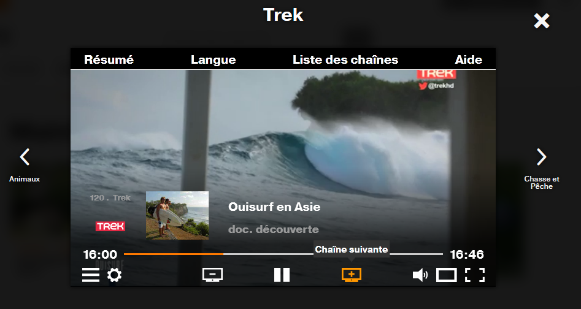

Accessible hiding
Introduction
Sometimes it is necessary to hide elements in a web page. The conventional way is to use CSS (display:none; and visibility:hidden;) or the HTML5 `hidden` attribute. These properties hide elements not only on the screen, but also for screen reader users. Thus, these elements will not be visible nor vocalized by Assistive technologies (AT).
In some cases, it may be useful to hide elements on the screen, but make sure they are still vocalised by screen readers. For this, an accessible hiding CSS class can be used.
Finally, you may want to display elements on the screen but make sure they are not vocalized. In this case, you can use an ARIA attribute (aria-hidden).
Accessible hiding
Accessible hiding allows an element to disappear from the screen, while being accessible to screen reader users. Technically, the solution is to add a CSS class on the element that should not be visible.
There are several solutions for this type of CSS class:
- Setting the element’s size to 0.
- Positioning the element off the screen (
left: -1000px; top: -1000px;). - Using
text-indentorclipproperties. - …
Ideally, it is best to combine all the solutions to make sure it is working properly in all browsers.
If you use a framework, it is very likely it already has a class for that. For example if you use Boosted or Bootstrap, you can use the visually-hidden CSS class (“screen reader only”) which is defined as follows:
.visually-hidden {
position: absolute;
position: absolute !important;
width: 1px !important;
height: 1px !important;
padding: 0 !important;
margin: -1px !important;
overflow: hidden !important;
clip: rect(0,0,0,0) !important;
white-space: nowrap !important;
border: 0 !important;
}
If you haven’t got an accessible hiding class yet, the easiest way is to copy and paste the code above.
Implementation
Accessible hiding class can be used in many cases. For example, to clarify a link label:
<a href="…">Learn more<span class="visually-hidden"> about our mobile plans</span></a>
Learn more about our mobile plans
We would have obtained the same result using the aria-label attribute on the link:
<a href="…" aria-label="Learn more about our mobile plans">Learn more</a>
The accessible hiding class solution still offers an advantage compared to the aria-label solution. If the CSS is disabled (replaced with a custom CSS adapted to a certain disability, for example), the hidden accessibly text will be displayed.
aria-hidden attribute
This attribute will hide an element (or group of elements) to screen readers. It has however no effect on the display.
Implementation
To hide an element to screen readers (and child elements), simply add the aria-hidden="true" attribute. Content can still be made accessible to ATs via aria-describedby or aria-labelledby.
Warning
If you put a focusable element in content (even on a parent node) with `aria-hidden =" true "`, it will be present in keyboard navigation but will be empty for AT. So, don't do it.
Example:The following screenshot shows a video player with a number of buttons (previous channel, next channel, pause…). This player is surrounded by two buttons also providing access to previous and next channels.
Visually this is not a problem. Although, when listening to the page with a screen reader, one can find it curious to hear an “Animals” button vocalized at the beginning of the page, and a “Hunting and Fishing” button vocalized at the end of page.
To avoid disturbing the user unnecessarily, the easiest way is to hide these buttons (for screen readers) with the aria-hidden attribute.
<div class="icon icon-arrow-left2" aria-hidden="true">
<div class="nextPreviousChannelName OrangeMedium" >Animals</div>
</div>